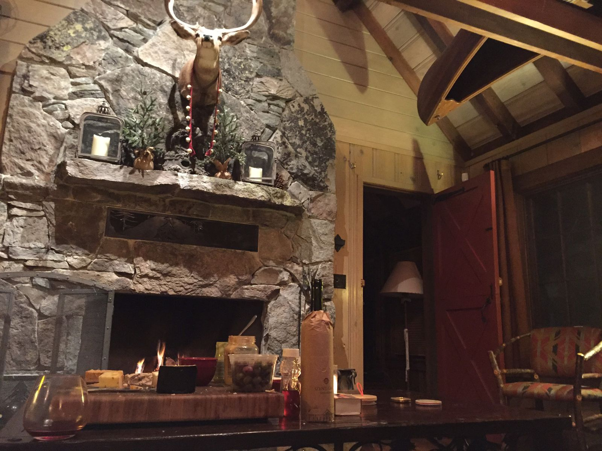

Cozy, Warm Fireplace
We've made it to Lake Tahoe, a small group of us to celebrate a friend's birthday. Never in my life have I seen so much snow as on the drive up here, despite the temperature being in the mid-fifties. Snow piled up as high as six feet.
We arrived at a rustic cabin, with more TVs and ethernet cable than I would ever expect to see. Below, a fire in the fire place, a cheese and charcuterie board, wine, and two fuzzy blankets on a soft couch. At last I feel so cozy, grinning ear to ear in the warmth.
